import torch
import torch.nn as nn
import torchvision.transforms as transforms
from torch.optim import lr_scheduler
import numpy as np
import pandas as pd
import matplotlib.pyplot as plt
import fastcore.all as fc
from functools import partial
from collections import Counter
from minai import *
from pilus_project.core import *
from pilus_project.yolov1 import *Yolo v1 using minai
Supercharge yolo v1 with miniai power
TODO: use more modern techniques to speed up training: torch.compile, transform.v2.
set_seed(42)transform = Compose([transforms.Resize((448, 448)), transforms.ToTensor(),])
IMG_DIR = "../data/images"
LABEL_DIR = "../data/labels"
bs = 64!ls ..8examples.csv _proc pilus_project test.csv
8examples_val.csv data pilus_project.egg-info train.all.txt
LICENSE generate_csv.py pyproject.toml train.csv
MANIFEST.in nbs settings.ini voc_dataset.sh
README.md old_txt_files setup.py voc_label.pytrn_ds = VOCDataset("../train.csv",
transform=transform,
img_dir=IMG_DIR,
label_dir=LABEL_DIR)
x0, y0 = trn_ds[0]
plot_image(x0, y0)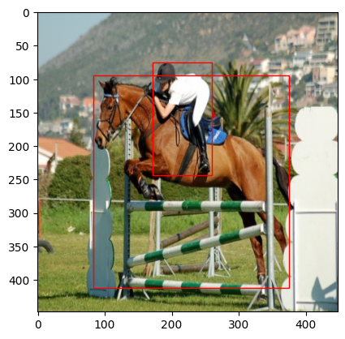
# examples_val_8 = pd.read_csv("../test.csv").iloc[:8]
# examples_val_8# examples_val_8.to_csv('../8examples_val.csv', index=False)val_ds = VOCDataset(
"../test.csv", transform=transform, img_dir=IMG_DIR, label_dir=LABEL_DIR,
)
x0, y0 = val_ds[0]
plot_image(x0, cellboxes_to_boxes(y0.unsqueeze(0))[0])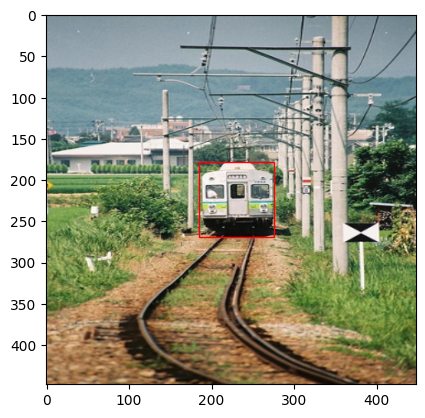
len(trn_ds), len(val_ds)(16550, 4951)trn_dl, val_dl = get_dls(trn_ds, val_ds, bs)
xb, yb = next(iter(trn_dl))
xb.shape, yb.shape(torch.Size([64, 3, 448, 448]), torch.Size([64, 7, 7, 30]))dls = DataLoaders(trn_dl, val_dl)class Yolov1(nn.Module):
def __init__(self, in_channels=3, **kwargs):
super(Yolov1, self).__init__()
self.architecture = architecture_config
self.in_channels = in_channels
self.darknet = self._create_conv_layers(self.architecture)
self.fcs = self._create_fcs(**kwargs)
def forward(self, x):
x = self.darknet(x)
return self.fcs(torch.flatten(x, start_dim=1))
def _create_conv_layers(self, architecture):
layers = []
in_channels = self.in_channels
for x in architecture:
if type(x) == tuple:
layers += [
CNNBlock(
in_channels, x[1], kernel_size=x[0], stride=x[2], padding=x[3],
)
]
in_channels = x[1]
elif type(x) == str:
layers += [nn.MaxPool2d(kernel_size=(2, 2), stride=(2, 2))]
elif type(x) == list:
conv1 = x[0]
conv2 = x[1]
num_repeats = x[2]
for _ in range(num_repeats):
layers += [
CNNBlock(
in_channels,
conv1[1],
kernel_size=conv1[0],
stride=conv1[2],
padding=conv1[3],
)
]
layers += [
CNNBlock(
conv1[1],
conv2[1],
kernel_size=conv2[0],
stride=conv2[2],
padding=conv2[3],
)
]
in_channels = conv2[1]
return nn.Sequential(*layers)
def _create_fcs(self, split_size, num_boxes, num_classes):
S, B, C = split_size, num_boxes, num_classes
# In original paper this should be
# nn.Linear(1024*S*S, 4096),
# nn.LeakyReLU(0.1),
# nn.Linear(4096, S*S*(B*5+C))
return nn.Sequential(
nn.Flatten(),
nn.Linear(1024 * S * S, 4096),
nn.Dropout(0.0),
nn.LeakyReLU(0.1),
nn.Linear(4096, S * S * (C + B * 5)),
)Learner
class MeanAP:
def __init__(self, num_classes=1, epsilon=1e-6, threshold=0.4, iou_threshold=0.5, box_format='midpoint'):
self.num_classes = num_classes
self.epsilon = epsilon
self.threshold = threshold
self.iou_threshold = iou_threshold
self.box_format = box_format
self.average_precisions = []
def reset(self):
self.average_precisions = []
def compute(self):
return sum(self.average_precisions) / len(self.average_precisions)
def update(self, pred, label):
# `get_bboxes` part
all_pred_boxes = []
all_true_boxes = []
train_idx = 0
batch_size = pred.shape[0]
pred_boxes = cellboxes_to_boxes(pred)
true_boxes = cellboxes_to_boxes(label)
for idx in range(batch_size):
nms_boxes = non_max_suppression(
pred_boxes[idx],
iou_threshold=self.iou_threshold,
threshold=self.threshold,
box_format=self.box_format,
)
for nms_box in nms_boxes:
all_pred_boxes.append([train_idx] + nms_box)
for box in true_boxes[idx]:
# many will get converted to 0 pred
if box[1] > self.threshold:
all_true_boxes.append([train_idx] + box)
pred_boxes = all_pred_boxes
true_boxes = all_true_boxes
for c in range(self.num_classes):
detections = []
ground_truths = []
# Go through all predictions and targets,
# and only add the ones that belong to the
# current class c
for detection in pred_boxes:
if detection[1] == c:
detections.append(detection)
for true_box in true_boxes:
if true_box[1] == c:
ground_truths.append(true_box)
# find the amount of bboxes for each training example
# Counter here finds how many ground truth bboxes we get
# for each training example, so let's say img 0 has 3,
# img 1 has 5 then we will obtain a dictionary with:
# amount_bboxes = {0:3, 1:5}
amount_bboxes = Counter([gt[0] for gt in ground_truths])
# We then go through each key, val in this dictionary
# and convert to the following (w.r.t same example):
# ammount_bboxes = {0:torch.tensor[0,0,0], 1:torch.tensor[0,0,0,0,0]}
for key, val in amount_bboxes.items():
amount_bboxes[key] = torch.zeros(val)
# sort by box probabilities which is index 2
detections.sort(key=lambda x: x[2], reverse=True)
TP = torch.zeros((len(detections)))
FP = torch.zeros((len(detections)))
total_true_bboxes = len(ground_truths)
# If none exists for this class then we can safely skip
if total_true_bboxes == 0:
continue
for detection_idx, detection in enumerate(detections):
# Only take out the ground_truths that have the same
# training idx as detection
ground_truth_img = [
bbox for bbox in ground_truths if bbox[0] == detection[0]
]
num_gts = len(ground_truth_img)
best_iou = 0
for idx, gt in enumerate(ground_truth_img):
iou = intersection_over_union(
torch.tensor(detection[3:]),
torch.tensor(gt[3:]),
box_format=self.box_format,
)
if iou > best_iou:
best_iou = iou
best_gt_idx = idx
if best_iou > self.iou_threshold:
# only detect ground truth detection once
if amount_bboxes[detection[0]][best_gt_idx] == 0:
# true positive and add this bounding box to seen
TP[detection_idx] = 1
amount_bboxes[detection[0]][best_gt_idx] = 1
else:
FP[detection_idx] = 1
# if IOU is lower then the detection is a false positive
else:
FP[detection_idx] = 1
TP_cumsum = torch.cumsum(TP, dim=0)
FP_cumsum = torch.cumsum(FP, dim=0)
recalls = TP_cumsum / (total_true_bboxes + self.epsilon)
precisions = torch.divide(TP_cumsum, (TP_cumsum + FP_cumsum + self.epsilon))
precisions = torch.cat((torch.tensor([1]), precisions))
recalls = torch.cat((torch.tensor([0]), recalls))
# torch.trapz for numerical integration
self.average_precisions.append(torch.trapz(precisions, recalls))cbs = [
TrainCB(),
DeviceCB(),
MetricsCB(MeanAP(num_classes=20)),
]
opt = partial(torch.optim.AdamW, betas=(0.9,0.95), eps=1e-5)model = Yolov1(split_size=7, num_boxes=2, num_classes=20)
lr, epochs = 1e-6, 20
tmax = epochs * len(dls.train)
sched = partial(lr_scheduler.OneCycleLR, max_lr=lr, total_steps=tmax)
xtra = [BatchSchedCB(sched)]
learn = Learner(model, dls, YoloLoss(), lr=lr, cbs=cbs+xtra, opt_func=torch.optim.AdamW)learn.show_image_batch needs to be fixed.
learn.show_image_batch()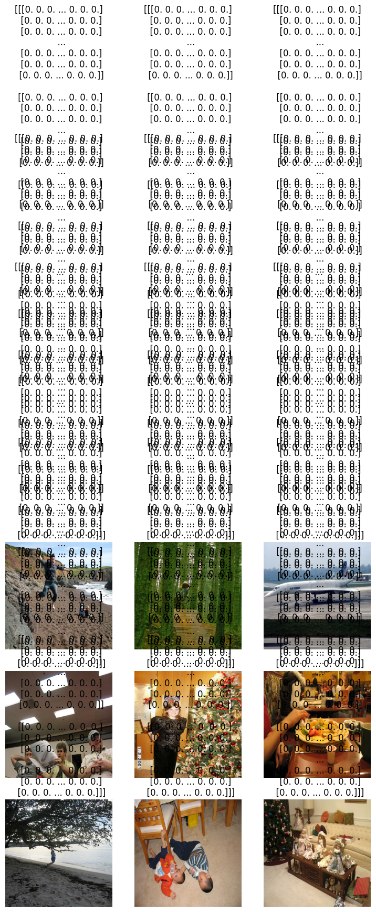
learn.fit(epochs, cbs=[ProgressCB(plot=True)])| MeanAP | loss | epoch | train | time |
|---|---|---|---|---|
| 0.000 | 4073.525 | 0 | train | 06:23 |
| 0.000 | 6326.053 | 0 | eval | 00:59 |
| 0.002 | 2554.204 | 1 | train | 03:32 |
| 0.014 | 3933.714 | 1 | eval | 00:42 |
| 0.030 | 1555.705 | 2 | train | 03:55 |
| 0.068 | 2416.115 | 2 | eval | 01:02 |
| 0.084 | 1030.208 | 3 | train | 04:24 |
| 0.106 | 1800.721 | 3 | eval | 01:07 |
| 0.118 | 848.246 | 4 | train | 04:29 |
| 0.107 | 1615.993 | 4 | eval | 01:05 |
| 0.123 | 787.683 | 5 | train | 04:23 |
| 0.106 | 1543.894 | 5 | eval | 01:03 |
| 0.120 | 757.363 | 6 | train | 04:18 |
| 0.103 | 1502.395 | 6 | eval | 01:04 |
| 0.120 | 736.230 | 7 | train | 04:17 |
| 0.102 | 1473.216 | 7 | eval | 01:03 |
| 0.118 | 716.683 | 8 | train | 04:13 |
| 0.100 | 1445.808 | 8 | eval | 01:02 |
| 0.114 | 701.659 | 9 | train | 04:11 |
| 0.102 | 1425.591 | 9 | eval | 01:03 |
| 0.107 | 688.869 | 10 | train | 04:10 |
| 0.099 | 1401.951 | 10 | eval | 01:07 |
| 0.111 | 678.630 | 11 | train | 04:14 |
| 0.103 | 1389.554 | 11 | eval | 01:01 |
| 0.110 | 668.484 | 12 | train | 04:09 |
| 0.097 | 1374.863 | 12 | eval | 01:01 |
| 0.104 | 661.353 | 13 | train | 04:12 |
| 0.096 | 1368.327 | 13 | eval | 01:00 |
| 0.104 | 654.398 | 14 | train | 04:11 |
| 0.098 | 1362.825 | 14 | eval | 01:01 |
| 0.104 | 649.071 | 15 | train | 04:11 |
| 0.093 | 1358.246 | 15 | eval | 01:01 |
| 0.101 | 646.394 | 16 | train | 04:10 |
| 0.096 | 1356.344 | 16 | eval | 01:01 |
| 0.106 | 644.981 | 17 | train | 04:08 |
| 0.096 | 1351.769 | 17 | eval | 01:01 |
| 0.104 | 642.134 | 18 | train | 04:09 |
| 0.097 | 1352.166 | 18 | eval | 01:02 |
| 0.102 | 641.413 | 19 | train | 04:09 |
| 0.090 | 1348.824 | 19 | eval | 01:01 |
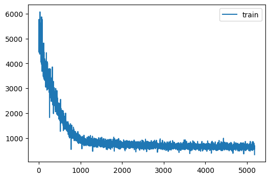
Testing
Let’s see if the model learned about bounding boxes for the training set.
Loading the weight from previous one:
# learn.opt_func = torch.optim.Adam(
# learn.model.parameters(), lr=lr, weight_decay=0
# )
load_checkpoint(torch.load("yolov1_1e-6_20.pth.tar", map_location=torch.device('cpu'), weights_only=True),
learn.model, learn.opt)=> Loading checkpointlearn.model.train(False)
for i in range(8):
x0, y0 = trn_ds[i]
bboxes = cellboxes_to_boxes(learn.model(x0.unsqueeze(0).to(DEVICE)))
bboxes = non_max_suppression(bboxes[0], iou_threshold=0.5, threshold=0.4, box_format='midpoint')
compare_ims(plot_image(x0, bboxes), plot_image(x0, cellboxes_to_boxes(y0.unsqueeze(0))[0]))
--------------------------------------------------------------------------- TypeError Traceback (most recent call last) Cell In[19], line 7 4 bboxes = cellboxes_to_boxes(learn.model(x0.unsqueeze(0).to(DEVICE))) 5 bboxes = non_max_suppression(bboxes[0], iou_threshold=0.5, threshold=0.4, box_format='midpoint') ----> 7 compare_ims(plot_image(x0, bboxes), plot_image(x0, cellboxes_to_boxes(y0.unsqueeze(0))[0])) File ~/git/pilus_project/pilus_project/core.py:119, in compare_ims(img1, img2) 117 plt.figure(figsize=(12,6)) 118 plt.subplot(121) --> 119 plt.imshow(img1, cmap='gray') 120 plt.title('img1') 121 plt.axis('off') File ~/miniforge3/envs/torch_latest/lib/python3.11/site-packages/matplotlib/pyplot.py:3592, in imshow(X, cmap, norm, aspect, interpolation, alpha, vmin, vmax, colorizer, origin, extent, interpolation_stage, filternorm, filterrad, resample, url, data, **kwargs) 3570 @_copy_docstring_and_deprecators(Axes.imshow) 3571 def imshow( 3572 X: ArrayLike | PIL.Image.Image, (...) 3590 **kwargs, 3591 ) -> AxesImage: -> 3592 __ret = gca().imshow( 3593 X, 3594 cmap=cmap, 3595 norm=norm, 3596 aspect=aspect, 3597 interpolation=interpolation, 3598 alpha=alpha, 3599 vmin=vmin, 3600 vmax=vmax, 3601 colorizer=colorizer, 3602 origin=origin, 3603 extent=extent, 3604 interpolation_stage=interpolation_stage, 3605 filternorm=filternorm, 3606 filterrad=filterrad, 3607 resample=resample, 3608 url=url, 3609 **({"data": data} if data is not None else {}), 3610 **kwargs, 3611 ) 3612 sci(__ret) 3613 return __ret File ~/miniforge3/envs/torch_latest/lib/python3.11/site-packages/matplotlib/__init__.py:1521, in _preprocess_data.<locals>.inner(ax, data, *args, **kwargs) 1518 @functools.wraps(func) 1519 def inner(ax, *args, data=None, **kwargs): 1520 if data is None: -> 1521 return func( 1522 ax, 1523 *map(cbook.sanitize_sequence, args), 1524 **{k: cbook.sanitize_sequence(v) for k, v in kwargs.items()}) 1526 bound = new_sig.bind(ax, *args, **kwargs) 1527 auto_label = (bound.arguments.get(label_namer) 1528 or bound.kwargs.get(label_namer)) File ~/miniforge3/envs/torch_latest/lib/python3.11/site-packages/matplotlib/axes/_axes.py:5945, in Axes.imshow(self, X, cmap, norm, aspect, interpolation, alpha, vmin, vmax, colorizer, origin, extent, interpolation_stage, filternorm, filterrad, resample, url, **kwargs) 5942 if aspect is not None: 5943 self.set_aspect(aspect) -> 5945 im.set_data(X) 5946 im.set_alpha(alpha) 5947 if im.get_clip_path() is None: 5948 # image does not already have clipping set, clip to Axes patch File ~/miniforge3/envs/torch_latest/lib/python3.11/site-packages/matplotlib/image.py:675, in _ImageBase.set_data(self, A) 673 if isinstance(A, PIL.Image.Image): 674 A = pil_to_array(A) # Needed e.g. to apply png palette. --> 675 self._A = self._normalize_image_array(A) 676 self._imcache = None 677 self.stale = True File ~/miniforge3/envs/torch_latest/lib/python3.11/site-packages/matplotlib/image.py:638, in _ImageBase._normalize_image_array(A) 636 A = cbook.safe_masked_invalid(A, copy=True) 637 if A.dtype != np.uint8 and not np.can_cast(A.dtype, float, "same_kind"): --> 638 raise TypeError(f"Image data of dtype {A.dtype} cannot be " 639 f"converted to float") 640 if A.ndim == 3 and A.shape[-1] == 1: 641 A = A.squeeze(-1) # If just (M, N, 1), assume scalar and apply colormap. TypeError: Image data of dtype object cannot be converted to float
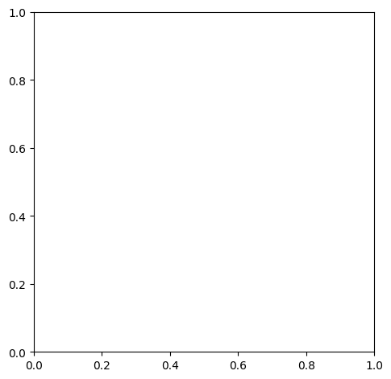
learn.model.train(False)
for i in range(8):
x0, y0 = val_ds[i]
bboxes = cellboxes_to_boxes(learn.model(x0.unsqueeze(0).to(DEVICE)))
bboxes = non_max_suppression(bboxes[0], iou_threshold=0.5, threshold=0.4, box_format='midpoint')
plot_image(x0, bboxes)
plot_image(x0, cellboxes_to_boxes(y0.unsqueeze(0))[0])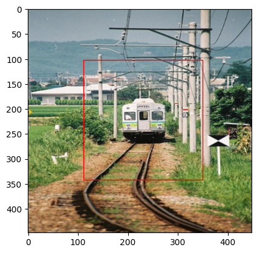
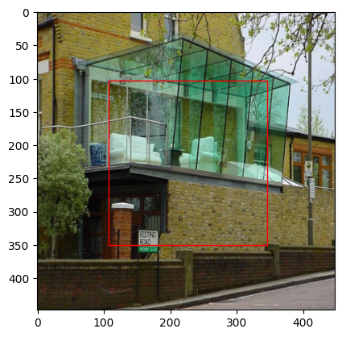
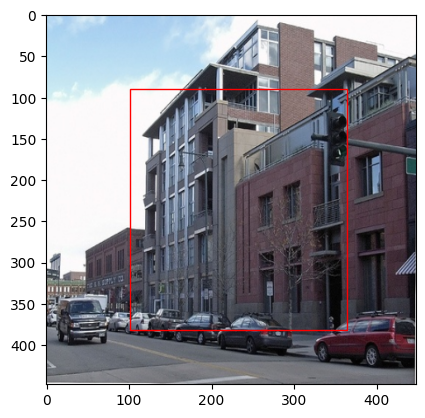
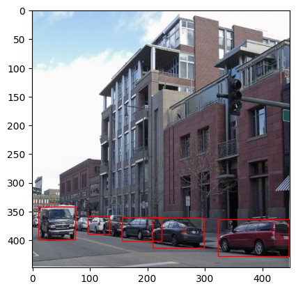
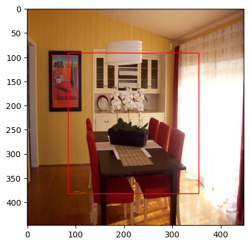
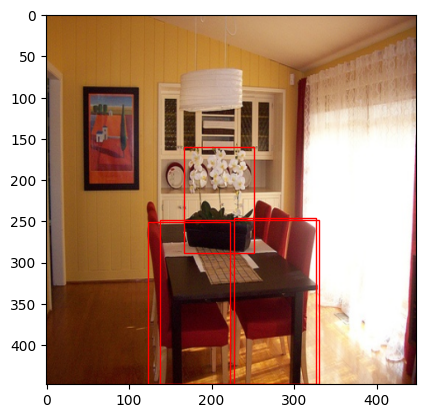
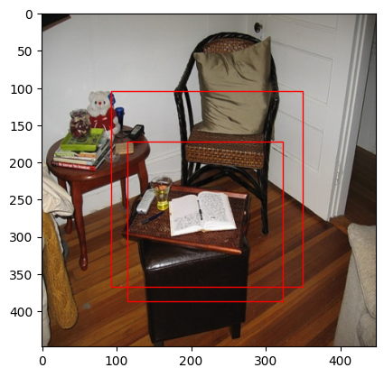
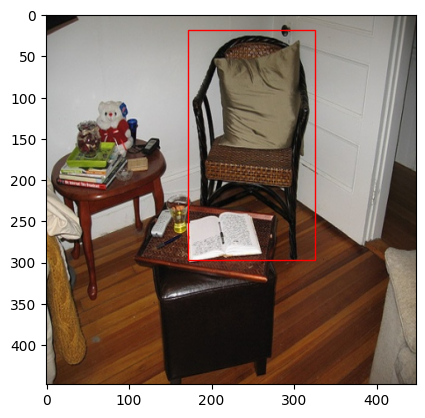
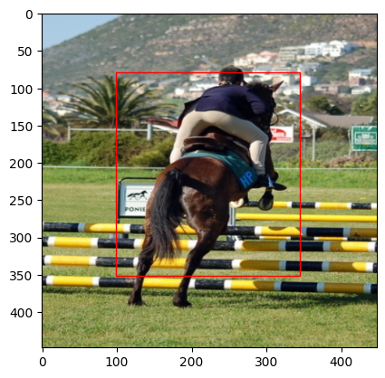
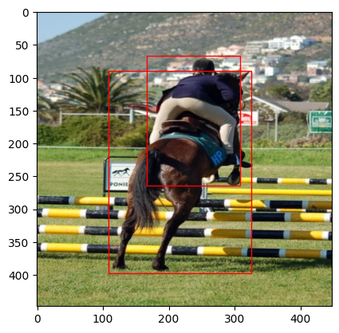
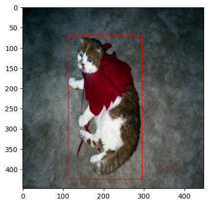
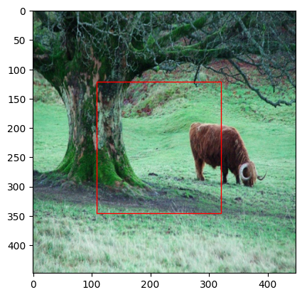
That doesn’t look that bad! Let’s save the model states.
checkpoint = {
"state_dict": learn.model.state_dict(),
"optimizer": learn.opt.state_dict(),
}
torch.save(checkpoint, "yolov1_1e-6_20.pth.tar")